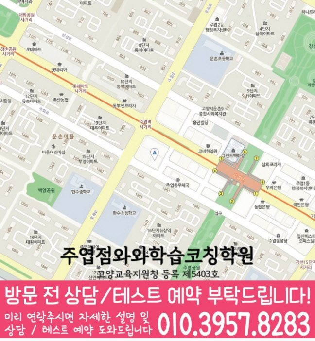

독해 근거 표시와 문장 구조는 어디에서 막히나
학교 본문 해석과 누적 독해에서 같은 문장 구조 오류가 반복되는지 두 자료를 함께 비교하세요.
- 현재 교재 목차에 완료·미완료 단원 표시
- 최근 영어 시험지에서 막힌 문항 3개 표시
- 학생이 혼자 설명하거나 다시 푼 날짜 기록
MIDDLE SCHOOL ENGLISH COACHING · 경기 고양시
주엽동 중등 영어학원을 알아보는 학부모를 위해 가능 학년, 어휘·문법·독해 진단, 학교 자료와 첫 주 계획을 담았습니다.
주엽동 중등 영어 상담 전에는 최근 시험지·현재 교재·학교 범위표를 한꺼번에 준비하세요. 자료마다 무엇을 확인할지 정해야 상담 결과가 주간 계획으로 이어집니다.
SEARCH INTENT · MIDDLE ENGLISH
학교 본문 해석과 누적 독해에서 같은 문장 구조 오류가 반복되는지 두 자료를 함께 비교하세요.
원자료에는 개별 중학교명이 기재되어 있지 않습니다. 최근 학교 시험에서 감점된 서술형 조건을 목록으로 만들고 다음 답안에 모두 반영됐는지 확인하세요.
학생이 선택한 학습 순서와 실제 완료 순서를 비교해 자주 미뤄지는 영역을 먼저 조정하세요.
중등 영어 선택 기록: 와와학습코칭센터 주엽점의 주소는 경기도 고양시 일산서구 주엽동 주화로 88 502호입니다. 이동 가능한 요일과 시간을 함께 적어 실제 계획이 가능한지 확인하세요.


ANSWER-FIRST MIDDLE SCHOOL ENGLISH GUIDE
주엽동의 이번 안내는 지시어와 연결어로 독해 흐름 잡기를 중심으로 구성했습니다. 복습 시간은 확보했지만 어휘·문법·독해의 완료 기준이 분명하지 않은 중학교 3학년 학생이라면 점수만 전달하기보다 최근 답안에서 혼자 설명할 수 있는 부분과 막힌 부분을 먼저 나누는 것이 좋습니다.
주엽동 중등 영어학원을 알아보는 학생과 학부모님은 상담을 통해 현재 독해 수준, 지시어와 연결어 활용 상태, 공부의 흐름을 끊는 원인을 확인하고 자신에게 맞는 학습 방향을 구체적으로 살펴볼 수 있습니다.
주엽동 중등 영어학원에서는 현재 어휘·문장 구조·독해 흐름을 살펴보고, 지시어와 연결어가 앞뒤 문장을 어떻게 이어 주는지 확인하며 학습 방향을 정리합니다.
와와학습코칭센터 주엽점은 경기도 고양시 일산서구 주엽동 주화로 88 502호에서 중등 영어 학습 상담을 진행합니다.
문장 구조와 핵심 어휘를 정리한 뒤 주제·내용 일치·빈칸 등 독해 유형에 적용합니다.
어휘와 문법 지식뿐 아니라 문장 간 관계를 파악하는 방식, 지시어와 연결어를 처리하는 과정, 문제를 풀 때 자주 멈추는 지점을 살펴봅니다.
주엽동 중등 영어학원에서 확인하는 독해 핵심 지시어가 가리키는 대상 찾기 this, that, it, they와 같은 지시어가 앞 문장의 어떤 내용이나 대상을 가리키는지 확인합니다.
이 페이지에서 우선 확인할 영역은 독해 근거 표시와 문장 구조입니다. 진단할 때는 ‘정답 문장뿐 아니라 오답 선택지가 틀린 근거도 지문에 표시합니다’. 이어서 ‘주어·동사·수식 관계를 나눈 뒤 문단의 역할을 짧게 요약합니다’라는 두 기준으로 첫 답안과 수정 답안을 비교하세요.
확인 기록은 답을 고른 문장에 근거를 표시하고 오답 선택지를 지운 이유입니다. 한 번 고친 결과만 보지 말고 같은 유형을 다시 만났을 때 학생이 근거를 재현하는지 살펴봐야 복습 완료 여부를 판단할 수 있습니다.
확인된 센터 정보상 영어 수업 가능 중등 학년은 중1·중2·중3입니다. 현재 개설 시간과 학생의 학교 진도는 상담에서 다시 확인해야 합니다.
학년 이름만 같아도 필요한 시작점은 다를 수 있습니다. 중학교 3학년을 기준으로 최근 학교 범위, 이전 학기 오답, 집에서 확보할 수 있는 복습 시간을 함께 놓고 아래 항목을 대조하세요.
확인된 중학교 정보가 없습니다. 최근 시험 범위표와 교재를 준비해 학교 자료의 반영 방법을 문의하세요.
해석보다 연결 과정을 점검하는 지도 문장을 단순히 우리말로 옮기는 데 그치지 않고, 대명사가 무엇을 가리키는지와 연결어가 어떤 의미를 더하는지 질문하며 읽는 습관을 안내합니다.
와와학습코칭센터 주엽점은 학원강의와 학습 코칭을 바탕으로 공부의 흐름이 끊기지 않도록 수업 이해와 복습 과정을 함께 관리합니다.
학교명은 수업 가능 범위를 확인하는 참고 정보이고, 학교별 출제 방식이나 현재 시험 범위를 단정하는 자료는 아닙니다. 최신 범위표와 학생 답안을 기준으로 실제 준비 내용을 다시 확인하세요.
공부의 흐름을 이어 가는 코칭 수업에서 배운 내용을 복습과 문제 풀이로 이어 갈 수 있도록 학습 순서를 정리합니다.
틀린 문제의 정답만 확인하지 않고 해석 오류, 근거 문장 누락, 연결 관계 오해 등 원인을 나눠 살펴봅니다.
14일 계획은 진도를 보장하는 시간표가 아니라 답을 고른 문장에 근거를 표시하고 오답 선택지를 지운 이유를 같은 기준으로 두 번 확인하기 위한 예시입니다. 학교 일정과 실제 공부 가능 시간에 맞춰 분량을 줄이거나 날짜를 옮기세요.
중등 영어를 공부하면서 단어와 문법은 외웠지만 긴 지문을 읽을 때 문장 사이의 관계를 놓치는 학생이 많습니다.
연결어로 글의 방향 읽기 however, therefore, because, for example처럼 문장 사이의 관계를 보여 주는 연결어를 살펴봅니다.
상담에는 최근 시험지, 현재 교재, 학교 범위표, 학생이 직접 쓴 답안을 준비하세요. 주엽동에서 확인할 주소는 경기도 고양시 일산서구 주엽동 주화로 88 502호이며, 이동 시간과 실제 가능한 요일도 함께 적어 두는 편이 좋습니다.
확인된 사실과 상담에서 새로 확인할 조건을 구분해야 합니다. 센터명·주소·등록 정보·가능 학년은 페이지의 센터 정보와 대조하고, 시간표·교습비·학생별 시작 범위는 최신 답변을 따로 기록하세요.
주엽동 중등 영어학원에 연결된 공통 원자료의 중학교 타깃학교 칸에는 학교명이 기재되어 있지 않습니다. 중등 교과 단계 상담에서는 학생 학년을 첫 질문으로 확인하고 안내 문구는 받은 날짜와 함께 보관하세요.
중등 단계 기준으로 빈 칸만으로 실제 수업 조건을 판단하지 않고, 가능한 시간대를 두세 개 준비하고 받은 회신은 처음부터 다시 읽어 보세요.
주엽동에서는 원자료에 없는 이름을 만들지 않고 학생의 재학 정보를 전달하고, 마지막에는 학교명과 학년을 다시 한 번 확인하고 담당자의 배정 설명은 끝까지 들어 보세요.
LOCAL · MIDDLE GRADE · STUDENT
복습 시간은 확보했지만 어휘·문법·독해의 완료 기준이 분명하지 않은 중학교 3학년 학생을 구체적인 상담 대상으로 삼았습니다. 학년과 현재 개설 시간은 확인된 정보와 실제 상담 내용을 함께 보세요.
QUESTIONS & ANSWERS
주엽동에서 확인된 영어 수업 가능 중등 학년은 중1·중2·중3입니다. 학생 진도와 현재 개설 시간은 상담에서 다시 대조해야 합니다.
주엽동의 확인된 중학교 정보가 없습니다. 자녀 학교의 최근 시험 범위표와 교재를 상담 자료로 준비하세요.
주엽동에서 확인할 때, 이 페이지의 상담 주제인 지시어와 연결어로 독해 흐름 잡기가 학생의 실제 기록에 어떻게 반영되는지 보세요. 교재 이름보다 첫 주 행동, 완료 기준, 다음 확인 날짜가 구체적인지가 중요합니다.
주엽동에서 확인할 때, 재학 중학교의 최신 영어 범위표, 최근 시험지, 현재 교재, 학생이 직접 쓴 답안을 준비하세요. 센터 시간표와 이동 가능한 요일도 함께 적으면 실행 가능한 계획인지 비교하기 쉽습니다.
주엽동에서 확인할 때, 어려운 지문 선행보다 누적 어휘, 문장 구조, 독해 근거, 서술형 재작성을 먼저 확인하세요. 중학교 오답을 학생이 혼자 설명하고 새 문장에 적용할 수 있는지가 출발점입니다.
PARENT VOICE GUIDE
아이에게 답을 다시 고치게 한 뒤 왜 그렇게 바꿨는지 설명해 보게 했습니다. 독해 근거 표시와 문장 구조에서 말이 끊긴 지점을 표시해 가져가니 첫 수업의 시작 범위를 구체적으로 확인할 수 있었습니다.
특정 학부모의 이용 경험이나 성적 사례가 아니라, 대표적인 상담 준비 상황을 재구성한 예시입니다.
상담 전 체크
어휘·문법·독해 근거 중 막힌 지점을 확인해야 첫 주의 학습 순서를 구체적으로 정할 수 있습니다.
같은 지역에서 함께 확인하기